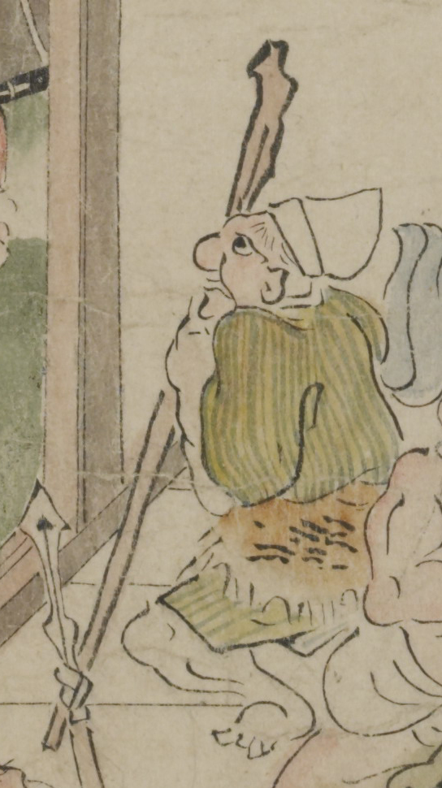

杖を持った鬼。白い烏帽子をかぶり、大きな鼻をしている。緑と黄色の縞模様の着物を着て、腰に毛皮を巻いている。杖を立てて摑まり、半立ちになっている。
著作者：坂本弥一郎徳定／出典：親書誌：U426_nichibunken_0080：伊吹山酒呑童子絵巻；イブキヤマシュテンドウジエマキ／日付：2007／資源識別子：U426_nichibunken_0080_0006_0003
Copyright (c)2010- International Research Center for Japanese Studies, Kyoto, Japan. All rights reserved.